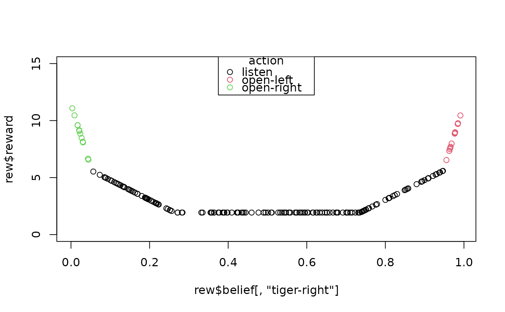
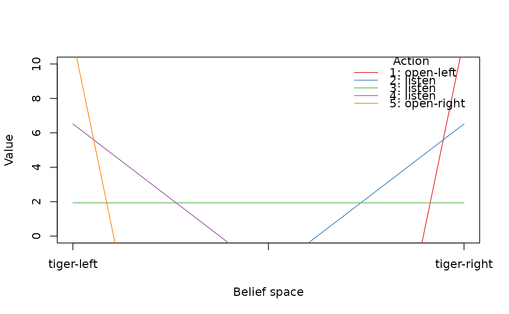

This function calculates the expected total reward for a POMDP solution
given a starting belief state. The value is calculated using the value function stored
in the POMDP solution. In addition, the policy graph node that represents the belief state
and the optimal action can also be returned using reward_node_action().
Arguments
- x
a solved POMDP object.
- belief
specification of the current belief state (see argument start in POMDP for details). By default the belief state defined in the model as start is used. Multiple belief states can be specified as rows in a matrix.
- epoch
return reward for this epoch. Use 1 for converged policies.
- ...
further arguments are passed on.
Value
reward() returns a vector of reward values, one for each belief if a matrix is specified.
reward_node_action() returns a list with the components
- belief_state
the belief state specified in
belief.- reward
the total expected reward given a belief and epoch.
- pg_node
the policy node that represents the belief state.
- action
the optimal action.
Details
The reward is typically calculated using the value function (alpha vectors)
of the solution. If these are not available, then simulate_POMDP() is
used instead with a warning.
Examples
data("Tiger")
sol <- solve_POMDP(model = Tiger)
# if no start is specified, a uniform belief is used.
reward(sol)
#> [1] 1.933439
# we have additional information that makes us believe that the tiger
# is more likely to the left.
reward(sol, belief = c(0.85, 0.15))
#> [1] 3.911252
# we start with strong evidence that the tiger is to the left.
reward(sol, belief = "tiger-left")
#> [1] 11.45008
# Note that in this case, the total discounted expected reward is greater
# than 10 since the tiger problem resets and another game staring with
# a uniform belief is played which produces additional reward.
# return reward, the initial node in the policy graph and the optimal action for
# two beliefs.
reward_node_action(sol, belief = rbind(c(.5, .5), c(.9, .1)))
#> $belief
#> tiger-left tiger-right
#> [1,] 0.5 0.5
#> [2,] 0.9 0.1
#>
#> $reward
#> [1] 1.933439 4.779814
#>
#> $pg_node
#> [1] 3 4
#>
#> $action
#> [1] listen listen
#> Levels: listen open-left open-right
#>
# manually combining reward with belief space sampling to show the value function
# (color signifies the optimal action)
samp <- sample_belief_space(sol, n = 200)
rew <- reward_node_action(sol, belief = samp)
plot(rew$belief[,"tiger-right"], rew$reward, col = rew$action, ylim = c(0, 15))
legend(x = "top", legend = levels(rew$action), title = "action", col = 1:3, pch = 1)

# this is the piecewise linear value function from the solution
plot_value_function(sol, ylim = c(0, 10))
